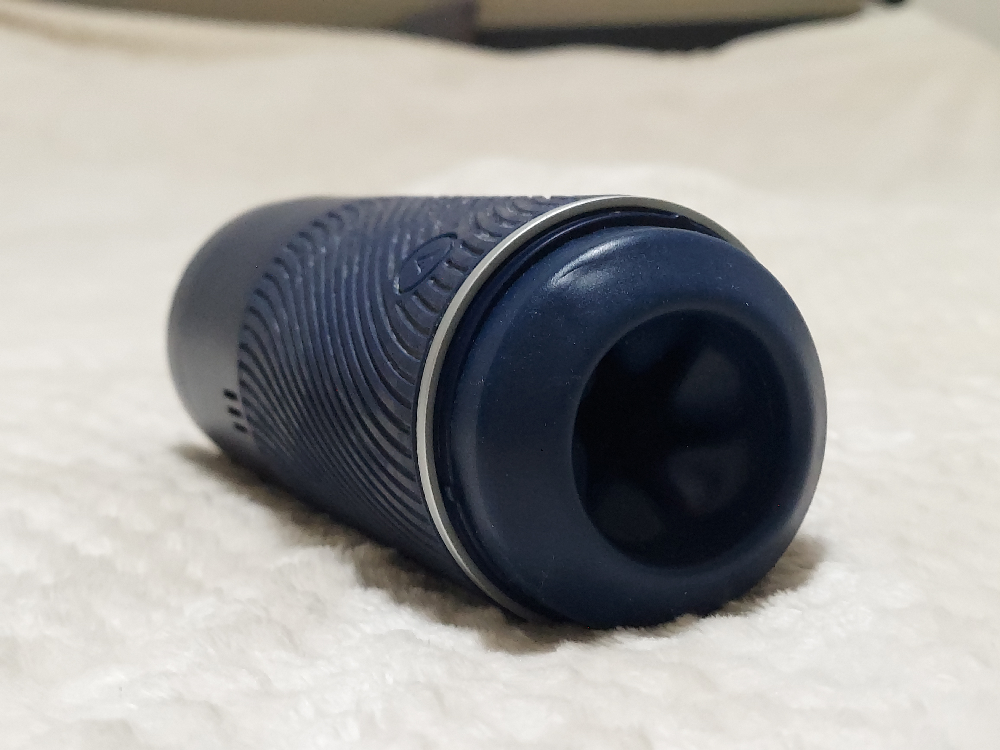

Cock Rings are a type of toy that I have wanted to like but have always disappointing me. After reading all the positive reviews and recomendations about Primal Rings I decided to give one a try. I decided to test the Primal Ring Fusion because I liked it's smooth countoured design and matte finish. This is the first solid ring I have tried, I have previously only tried stretchy silicone rings which are easy to put on but I dislike them because they can feel rather tight and uncomfortable and always pull my hair.
The Primal Ring Fusion is a stainless steel ring designed to be worn around the penis and testicles. Like most cock rings it is designed to restrict blood flow out of the penis increasing sensitivity and producing stronger erections The Ring has a keyhole opening and an s-curved shape which help it follow body contours and and be worn comfortably. Primal Rings do not impede ejaculation, because the Keyhole shape of the ring puts pressure on the ureatha then a circular ring. The ring has a small engraved P at the top which is the only branding.
Before ordering a ring I carefully measured myself using the directions on the website; I chose a 50mm ring. Like all rings I have previously tried, the Primal Ring Fusion can be a bit difficult to put on. Because the ring is stainless steel and does not stretch I can only put it on when I am totally flacid. A few things I noticed the first time I tried the Fusion are: that the smooth texture did not catch on my hair, the ring was lighter then expected, and the metal felt cool to the touch.
The Primal Ring Fusion is made of stainless steel. It has a smooth matte finish giving it a subtly elegant look. The edges are nicely beveled. The ring weighs approximately 2oz; its weight is noticeable but it does not feel particularly heavy. Overall the Primal Ring Fusion feels like a quality acessory; it is smooth, heavy and nicely finished.
Stainless steel is a remarkably durable material which is why it is used for everything from kitchen utensils to medical equipment. I wanted to test the crosion resistance of the Fusion so I placed it in a salt water solution for 24 hours then allowed it to air dry. There was no corrosion or discoloration from my testing. The ring is unexceptionally easy to care for, after use I wash it and put it away.
The Primal Ring Fusion comes in a small black velvet storage bag. The bag has a snap closure and contained an instruction card in addition to the ring. The Fusion Ring costs $39.99 and is availible on the Primal Ring website $40 is in my experience a bit expensive for a cock ring, but it is the best one I have ever tried so I am happy with my purchase.
Overall I really like the Primal Ring Fusion. It is reasonably easy to put on, it makes me look good and it feels good. It has a premium look and is surprisingly comfortable. I have been using it frequently and am enjoying it. It is somewhat expensive but not unreasonably so. I am glad I finally tried a metal ring.
home